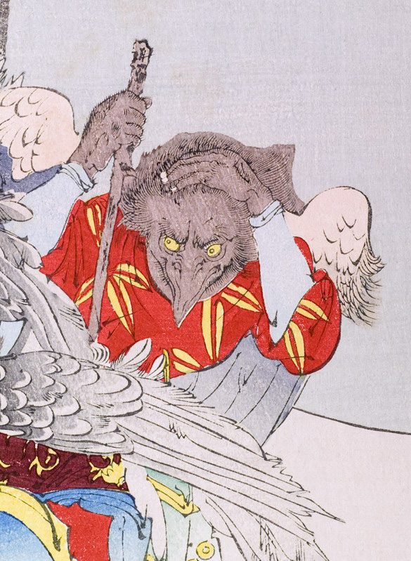

棒を持ち屈み込む烏天狗。左手で頭を抱えている。全身が黒い羽毛で覆われ、手足と嘴も同様に黒い。背の翼が千切れてしまっているようにみえる。小豆色で黄色の笹柄が入った着物と青い袴をはき、青白い手甲を付けている。目玉は黄色く描かれている。
著作者：秀湖／出典：親書誌：U426_nichibunken_0144：御曹子牛若丸鞍馬ニ劍法ヲ修ス；オンゾウシウシワカマルクラマニケンポウヲシュウス／日付：2009／資源識別子：U426_nichibunken_0144_0001_0004
Copyright (c)2010- International Research Center for Japanese Studies, Kyoto, Japan. All rights reserved.